Optical flow evaluation demo
Computes flow field between two images using various methods and display it (deepflow, simpleflow, sparsetodenseflow, Farneback, TV-L1).
Sources:
Contents
Input images
a pair of 8-bit color images
im1 = imread(fullfile(mexopencv.root(),'test','RubberWhale1.png')); im2 = imread(fullfile(mexopencv.root(),'test','RubberWhale2.png')); assert(isequal(size(im1), size(im2)), ... 'Dimension mismatch between input images'); if ~mexopencv.isOctave() && mexopencv.require('images') %HACK: IMSHOWPAIR not implemented in Octave imshowpair(im1, im2); end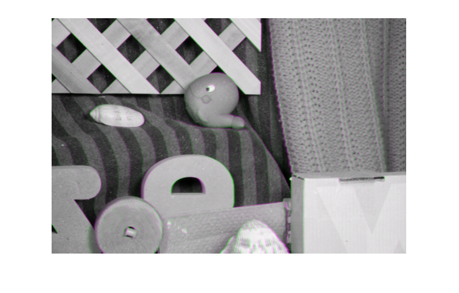
Compare the different methods
algorithms = {'farneback', 'simpleflow', 'tvl1', 'deepflow', ...
'sparsetodenseflow', 'pcaflow', ...
'DISflow_ultrafast', 'DISflow_fast', 'DISflow_medium', 'variational'};
for i=1:numel(algorithms)
% prepare images
if any(strcmp(algorithms{i}, {'farneback', 'tvl1', 'deepflow', ...
'DISflow_ultrafast', 'DISflow_fast', 'DISflow_medium', ...
'variational'})) && size(im1,3)==3
% 1-channel images are expected
img1 = cv.cvtColor(im1, 'RGB2GRAY');
img2 = cv.cvtColor(im2, 'RGB2GRAY');
elseif strcmp(algorithms{i}, 'simpleflow') && size(im1,3)==1
% 3-channel images expected
img1 = cv.cvtColor(im1, 'GRAY2RGB');
img2 = cv.cvtColor(im2, 'GRAY2RGB');
else
% sparsetodenseflow/pcaflow handle both 1- or 3-channels
img1 = im1;
img2 = im2;
end
% compute flow field between img1 and img2 using current method
tic
switch lower(algorithms{i})
case 'farneback'
%{
obj = cv.FarnebackOpticalFlow();
flow = obj.calc(img1, img2);
%}
flow = cv.calcOpticalFlowFarneback(img1, img2);
case 'simpleflow'
flow = cv.calcOpticalFlowSF(img1, img2);
case 'deepflow'
flow = cv.calcOpticalFlowDF(img1, img2);
case 'sparsetodenseflow'
flow = cv.calcOpticalFlowSparseToDense(img1, img2);
case 'tvl1'
obj = cv.DualTVL1OpticalFlow();
flow = obj.calc(img1, img2);
case 'pcaflow'
%obj = cv.OpticalFlowPCAFlow(prior); % path to a prior file for PCAFlow
obj = cv.OpticalFlowPCAFlow();
flow = obj.calc(img1, img2);
case 'disflow_ultrafast'
obj = cv.DISOpticalFlow('Preset','UltraFast');
flow = obj.calc(img1, img2);
case 'disflow_fast'
obj = cv.DISOpticalFlow('Preset','Fast');
flow = obj.calc(img1, img2);
case 'disflow_medium'
obj = cv.DISOpticalFlow('Preset','Medium');
flow = obj.calc(img1, img2);
case 'variational'
obj = cv.VariationalRefinement();
flow = obj.calc(img1, img2);
end
fprintf('%18s: ', algorithms{i});
toc
% display the flow
if true
[mag, ang] = cv.cartToPolar(flow(:,:,1), flow(:,:,2), 'Degrees',true);
else
[ang, mag] = cart2pol(flow(:,:,1), flow(:,:,2));
if mexopencv.isOctave()
%HACK: RAD2DEG not implemented in Octave
ang = (ang + pi) * (180 / pi);
else
ang = rad2deg(ang + pi);
end
end
mag = cv.normalize(mag, 'Alpha',0, 'Beta',1, 'NormType','MinMax');
hsv = cat(3, ang, ones(size(ang),class(ang)), mag); % H=[0,360], S,V=[0,1]
rgb = cv.cvtColor(hsv, 'HSV2RGB'); % R,G,B=[0,1]
figure, imshow(rgb)
title(sprintf('Computed flow: %s',algorithms{i}), 'Interpreter','none')
end farneback: Elapsed time is 0.201330 seconds.
simpleflow: Elapsed time is 1.529157 seconds.
tvl1: Elapsed time is 1.269737 seconds.
deepflow: Elapsed time is 0.849141 seconds.
sparsetodenseflow: Elapsed time is 0.341761 seconds.
pcaflow: Elapsed time is 0.625318 seconds.
DISflow_ultrafast: Elapsed time is 0.124396 seconds.
DISflow_fast: Elapsed time is 0.020869 seconds.
DISflow_medium: Elapsed time is 0.046709 seconds.
variational: Elapsed time is 0.149174 seconds.
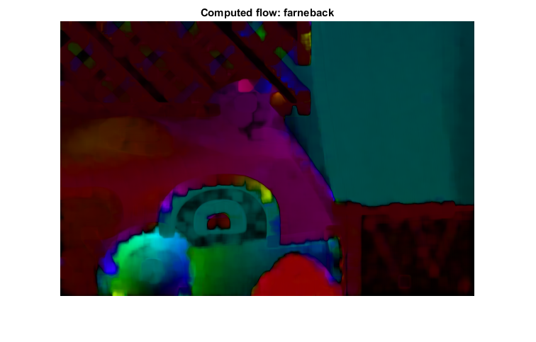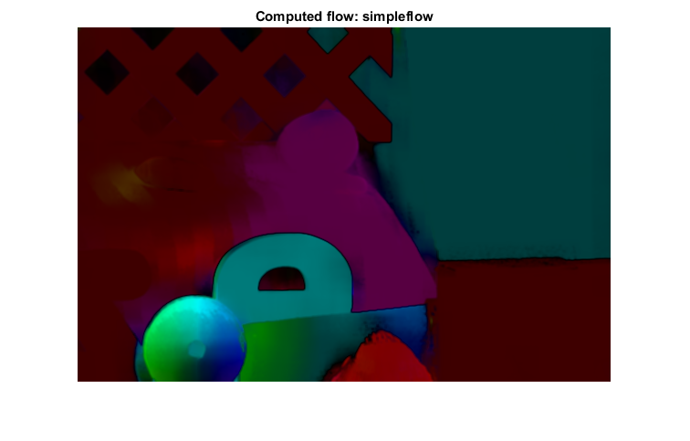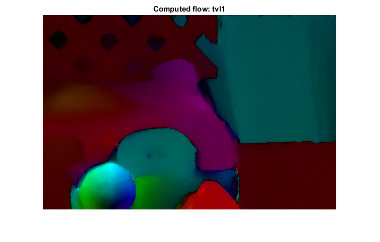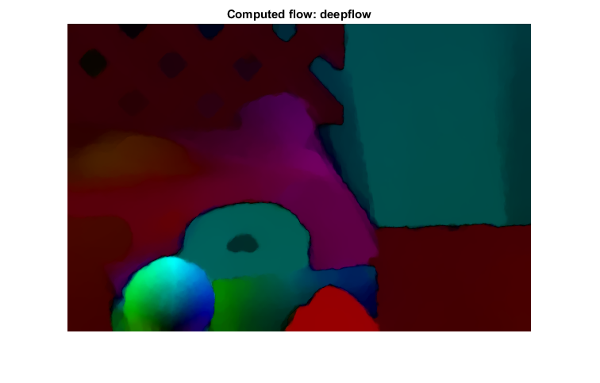 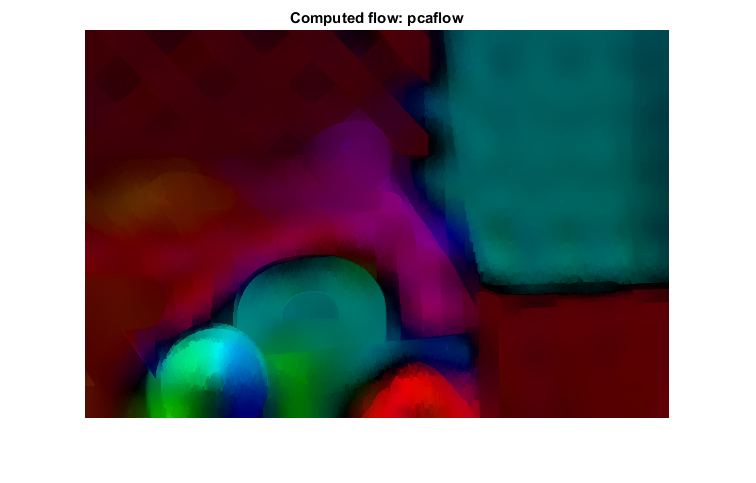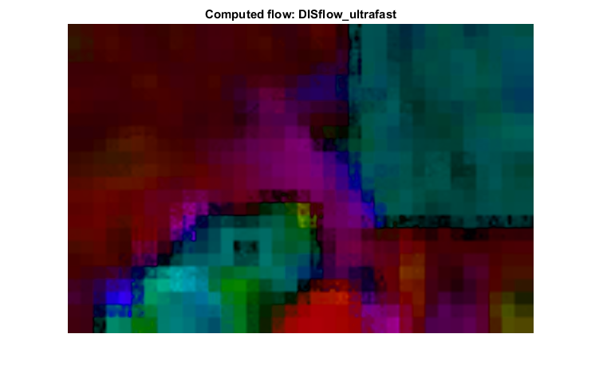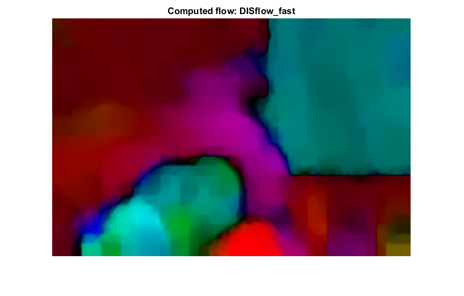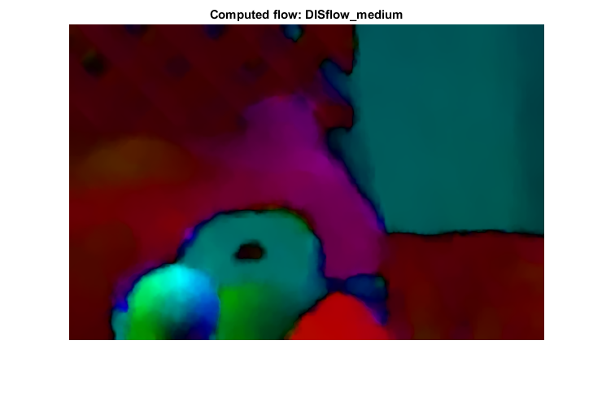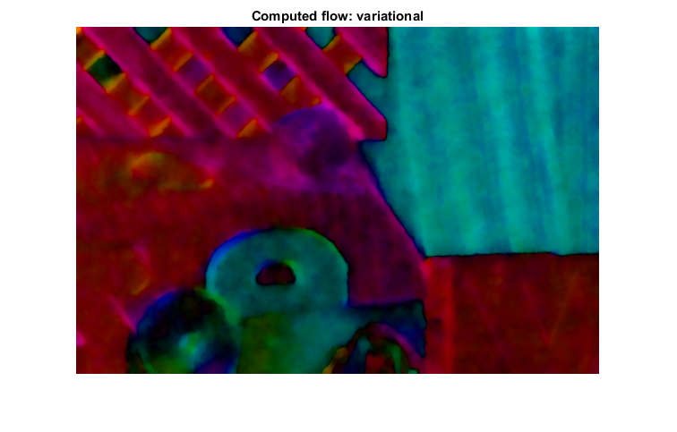
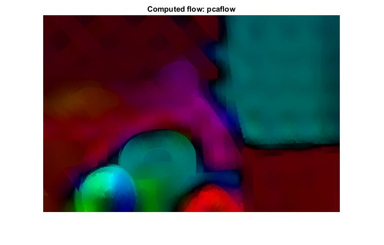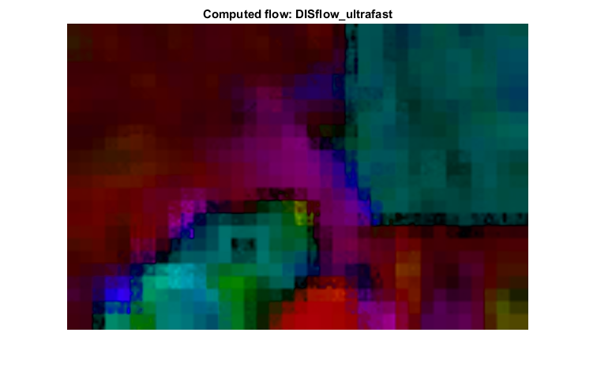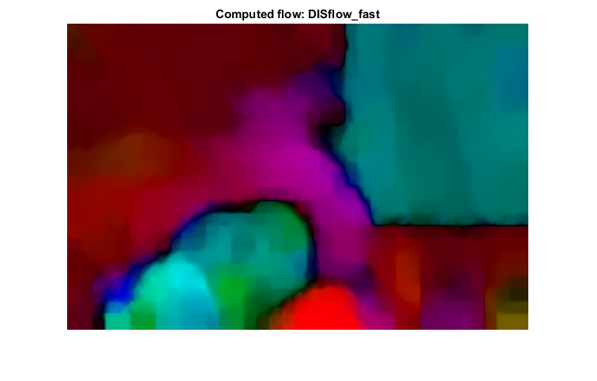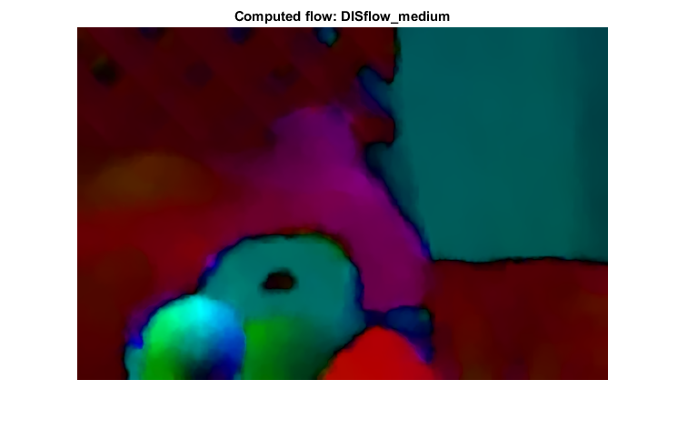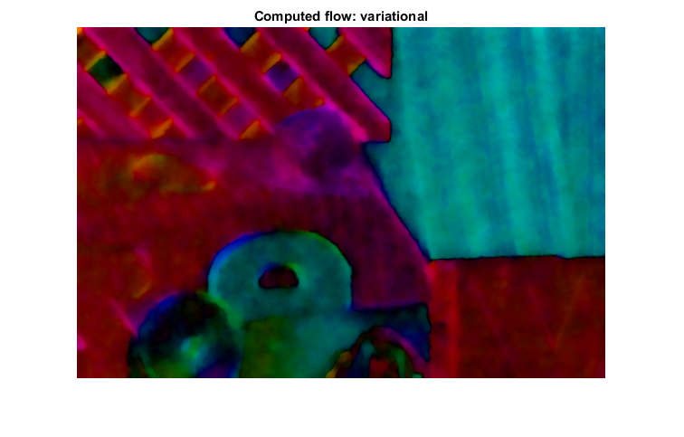